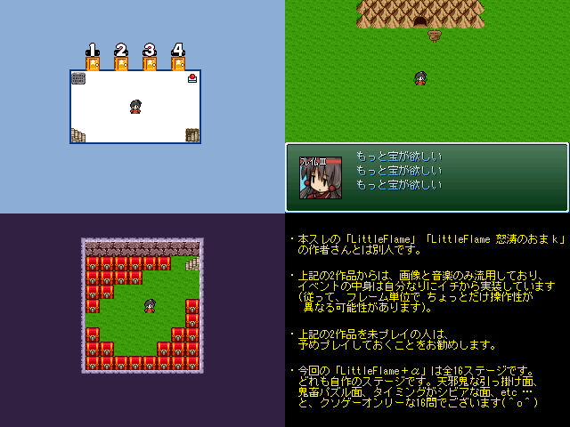

| No.04 | LittleFlame＋α | 容量：475KB | |
|
 | ||||
| 作者：ALPHA | ジャンル：アクションパズル 使用ツール：2000 | 配信：可 動画：可 | 感想掲示板 | |
| コメント： 本スレの 「LittleFlame」(2012/11/12) 「LittleFlame 怒涛のおまｋ」(2012/11/13) の作者さんとは別人です(作者さんゴメンナサイ ＾o＾)。 自分でも自作ステージを作ってみたので、 このような形で投稿することにしました。全16ステージです。 なお、上記の2作品からは、画像と音楽のみ流用しており、 イベントの中身は自分なりにイチから実装しています (従って、フレーム単位で ちょっとだけ操作性が異なる可能性があります)。 上記の2作品を未プレイの人は、予めプレイしておくことをお勧めします。 | ||||
|
管理者からのコメント： これは良い鬼畜パズルの予感 | ||||
|
最近の更新： 8/22：パッチ更新。 8/16：パッチ更新。 8/15：提出。 7/3：ゲームジャンル追加。 7/2：公開。 | ||||